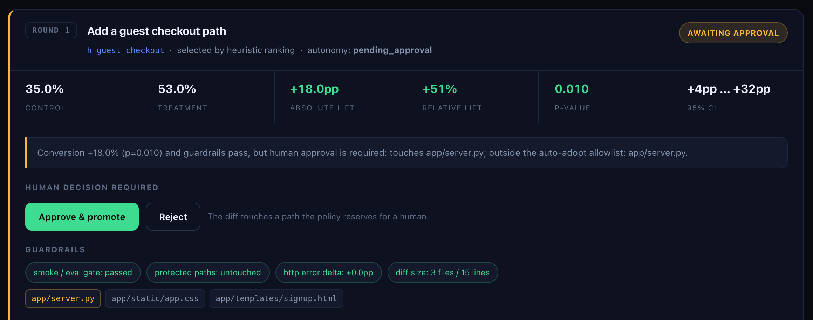

Each round it reads the previous round's telemetry, proposes several hypotheses, implements exactly one, and has to clear an eval gate before a single simulated customer sees it. Then both versions run side by side and a two-proportion z-test decides what survives. Every number on this page came out of a real browser session against a real server.
Each defect is the kind that looks reasonable to somebody: a form that asks for everything at once, a login wall in front of the money, and a promotional bar that covers the button it is promoting. The agent is told none of this — it sees only a summary of the logs.
One hypothesis per round, so a lift belongs to a single named change
rather than a bundle. The diffs below are the round's real diff.patch;
the gate results are its real smoke.json.
The policy reads the diff, not the intent. Templates and CSS inside the
size limits ship unattended; a diff that touches a route does not, however good the
number is. Below is the dashboard holding a +18.0pp win at p=0.010 — all
guardrails green — because app/server.py is in the diff. Nothing reaches the
baseline until somebody clicks. Approving promotes that round's exact candidate and
records that a human decided; rejecting leaves the baseline untouched.

write_file resolves every path and refuses anything outside
candidate/ — traversal, absolute paths and symlinks included. There is a
test for each escape.
A separate process re-reads the round's diff against protected_paths and
marks the round invalid on a hit. Two enforcement points, two processes.
Smoke failed or protected path touched → invalid. Error rate up >2pp → rollback. Lift > 0 and p < 0.10 → adopt, or wait for a human per policy. No model input.
The simulator does, from outside the tree the agent may edit, so an agent cannot improve its own numbers by touching instrumentation.
A tablet persona never appears in the agent's summary and never influences a decision. It is reported separately as an overfitting check.
Templates and CSS inside the size limits ship unattended. A route change waits for a person. An edit to the evaluator is rolled back on principle.
It has never failed in a real round, so sim/test_gate.py manufactures the
failures: a step with no forward action, a 500 mid-funnel, an input the simulator
cannot see. Each must be caught by the case that names it.
pip install flask playwright && playwright install chromium python orchestrator/run_loop.py --rounds 3 --n 200 --seed 7 --auto-approve --reset python dashboard/server.py # the live dashboard, http://127.0.0.1:8080
The seed is fixed, so the run reproduces exactly —
same personas, same order, same assignment, and the same result at any
--workers setting, because each session draws from a seed derived from its own
index.